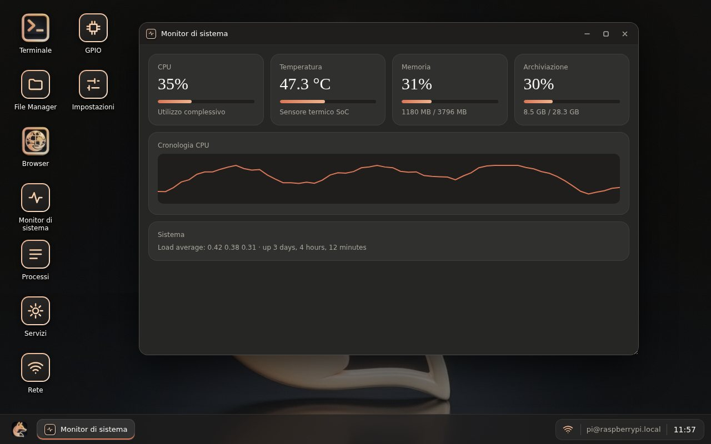
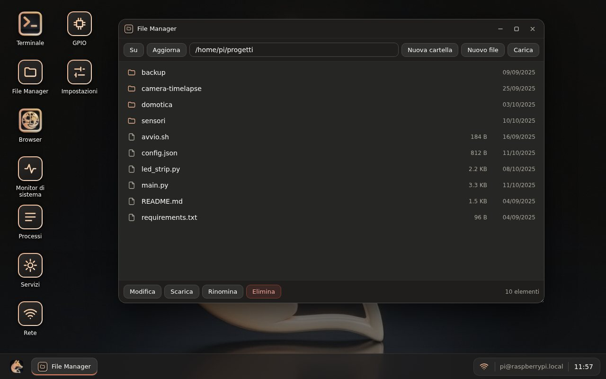
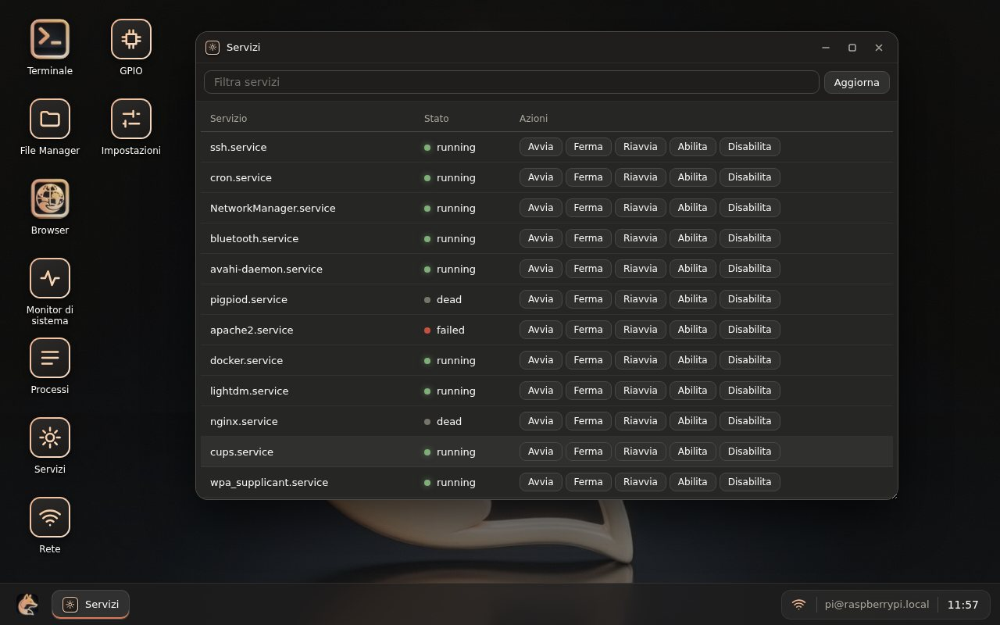

Terminale
Una shell completa con colori e copia-incolla. Ne puoi aprire quante ne vuoi, anche affiancate.
Terminale, file, monitor di sistema e browser in un'app per Windows. Ti colleghi con SSH e non installi nulla sul Raspberry.
Per Windows 10 e 11. Serve solo SSH attivo sul Raspberry.
Schermate reali dell'app collegata a un Raspberry Pi.



Ogni app si apre con un clic dal desktop dell'applicazione.
Una shell completa con colori e copia-incolla. Ne puoi aprire quante ne vuoi, anche affiancate.
Un browser con le schede, per aprire la dashboard del Raspberry o cercare sul web senza cambiare finestra.
Cartelle, modifica, carica e scarica.
CPU, temperatura, RAM e disco in tempo reale.
Vedi cosa consuma di più e chiudi i processi bloccati.
Gestisci i servizi di sistema.
Interfacce, Wi-Fi, gateway e ping. Il Wi-Fi è sempre visibile in basso a destra.
Lo stato dei pin, aggiornabile al volo.
Cambia sfondo e colori, leggi le informazioni del sistema, riavvia o spegni il Raspberry.
Si fa dal menu di configurazione di Raspberry Pi OS, in Interface Options.
sudo raspi-configEstrai il progetto e fai doppio clic su crea-app.bat. Alla prima volta serve Node.js.
crea-app.batScrivi indirizzo, username e password del Raspberry. Poi clicca un'icona per aprire un'app.
pi@raspberrypi.localL'app parla con il Raspberry tramite SSH. Non passa da nessun server esterno.
Se vuoi, l'app ricorda indirizzo e username. La password resta in memoria solo finché sei collegato.
Puoi entrare con una chiave privata invece che con la password.
No. Basta che SSH sia attivo.
Sì, se il Raspberry è raggiungibile dal tuo computer, per esempio con una VPN come Tailscale o WireGuard. L'app non apre porte da sola.
Il file crea-app.bat è per Windows. Il progetto è fatto con Electron, quindi con npm start si può avviare anche altrove, ma non è stato provato.
Alcuni dati dipendono dal modello e dal sistema. Con il collegamento via cavo, il Wi-Fi risulta non connesso.
Scarica la nuova versione del progetto e lancia di nuovo crea-app.bat: l'installazione sostituisce la precedente.
Usa la versione installata da crea-app.bat. Si avvia molto più in fretta della versione portatile, che ogni volta si decomprime da capo.
Scarica il progetto, esegui crea-app.bat e collegati al tuo Raspberry.